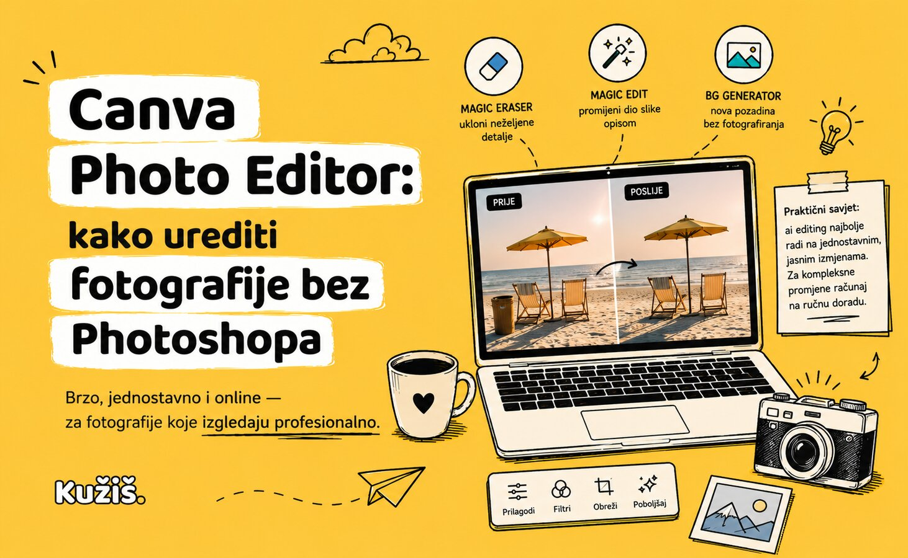

Canva Photo Editor: kako urediti fotografije bez Photoshopa

Za većinu poslovnih potreba — čišćenje pozadine, promjena elementa na slici, brzo poboljšanje kvalitete — Canva Photo Editor je dovoljan, brži je od Photoshopa i ne treba mu instalacija.
Magic Eraser — uklanjanje neželjenih detalja
Označiš dio slike, Canva ga ukloni i popuni pozadinu automatski. Idealno za slučajni predmet u kadru ili osobu u pozadini koju ne želiš na fotki.
Magic Edit i generative fill — mijenjanje dijela slike opisom
Opišeš što želiš promijeniti („zamijeni nebo zalaskom sunca“) i AI to ugradi u sliku tako da izgleda prirodno, ne zalijepljeno.
BG Generator — nova pozadina bez fotografiranja
Opišeš scenu, Canva generira pozadinu i uklopi tvoj proizvod/objekt u nju. Korisno kad nemaš vremena ili opremu za pravo fotografiranje proizvoda.
Najčešća pitanja
Je li Canva Photo Editor besplatan?
Osnovne funkcije (filtri, obrezivanje, Magic Eraser u ograničenoj mjeri) su besplatne; napredniji AI alati imaju mjesečni limit na besplatnom planu.
Zamjenjuje li Canva Photo Editor Photoshop u potpunosti?
Ne za kompleksnu retušu ili profesionalnu fotografsku obradu — ali za 80% svakodnevnih poslovnih potreba, da.